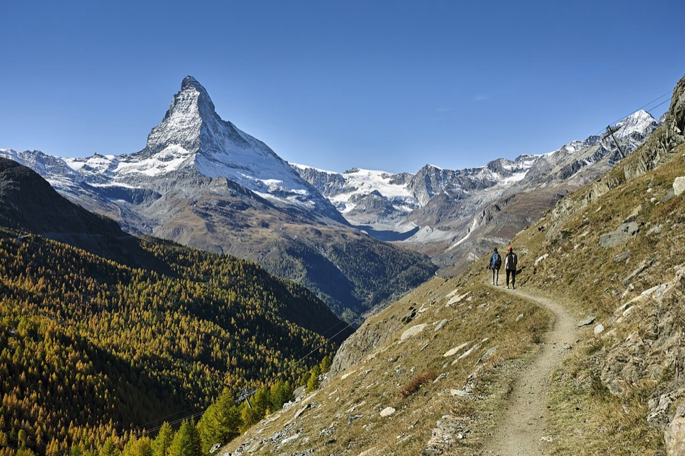

Швейцария

Швейцария собрана из открыток, но без фальши: озёра действительно изумрудные, коровы носят колокольчики, а поезда приходят, как гиревые часы, — с точностью до секунды. Bernina Express — причина взять отпуск сам по себе: поезд взбирается в горы так, что пассажиры в одно и то же мгновение забывают про телефоны, а панорамные окна заканчиваются в считаных метрах от отвесных склонов. Цюрих удобен для старта — озеро, тихая старая часть, шоколадные прилавки серьёзнее большинства музеев. Женева даёт международный шлейф и фонтан на 140 метров, Люцерн — деревянный Часовенный мост XIV века и вид на озеро, который вы не поверите с первого взгляда, пока не убедитесь лично. Фуникулёры доезжают туда, где фондю звучит уместнее всего, а вода в городских фонтанах — питьевая: смело пейте, это тут — норма. Дорого — да. Но впечатления здесь продаются метрами высоты, и каждый чек хотя бы объясним.
Что знать перед поездкой
- Half Fare Card экономит на поездах
- Вода из фонтанов — питьевая, смело
- Фондю лучше пробовать на высоте